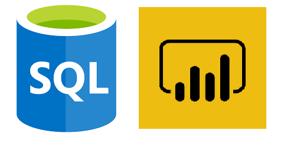
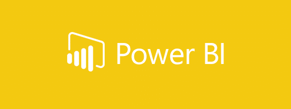

This Project is all about EDA using Python on an Olympic Dataset as Exploratory data analysis (EDA) is a critical step in the data analysis process that involves examining and summarizing data to identify patterns, relationships, and trends. Python is a popular programming language for EDA due to its versatility and powerful libraries such as Pandas, NumPy, and Matplotlib.

This Project is all About EDA on Goodreads Dataset Using Python and it's Libraries such as Numpy,Pandas and Matplotlib.

By combining the power of SQL, which allows for efficient querying and manipulation of large datasets, and Power BI, which provides interactive data visualization and reporting capabilities, this project enables businesses to make data-driven decisions and optimize their sales performance.
The end result is a dynamic dashboard that provides real-time visibility into key sales metrics such as revenue, customer acquisition, and product performance, which can help businesses identify trends, opportunities, and areas for improvement.

With this dashboard, users can track important financial metrics such as revenue, expenses, cash flow, and profitability in real-time. They can also analyze trends, identify areas of improvement, and make data-driven decisions.
This Cryptocurrency Dashboard in Power BI provides interactive visualizations, such as charts, graphs, and tables, which allow users to slice and dice data in various ways, providing deeper insights into their investments.
This Superstore Sales Dashboard gives a impactful insights like Sales by Market, Sales by Quantity, Sales by Region, Top 5 Products, Top 5 Customers Etc.

Do check out My Java Projects from the Link provided Below!!